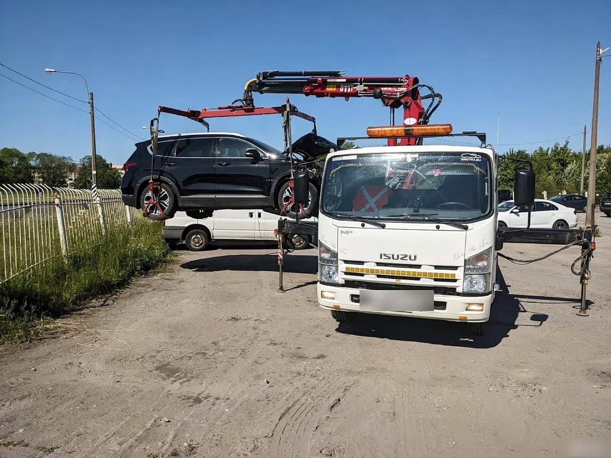
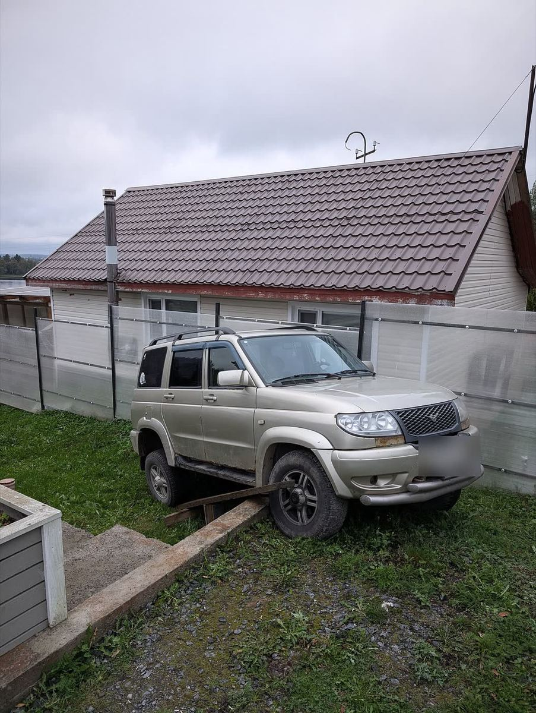
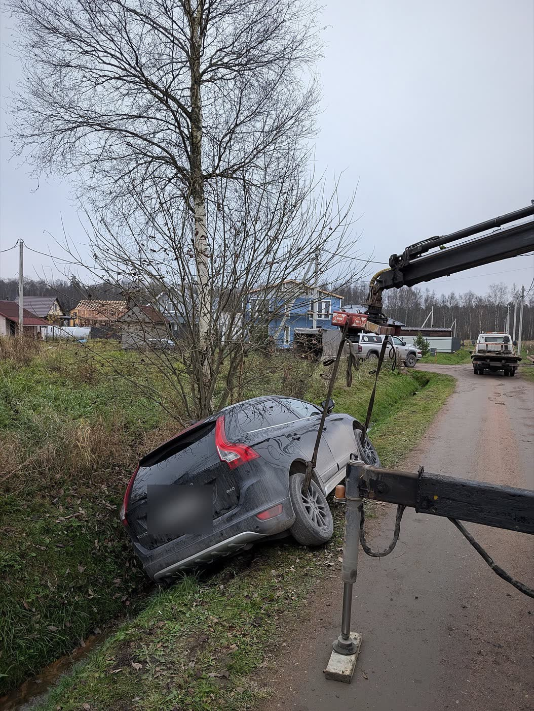
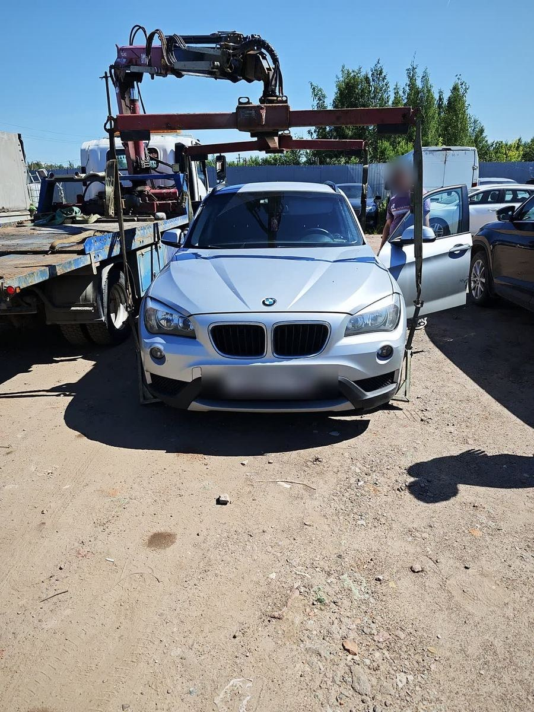
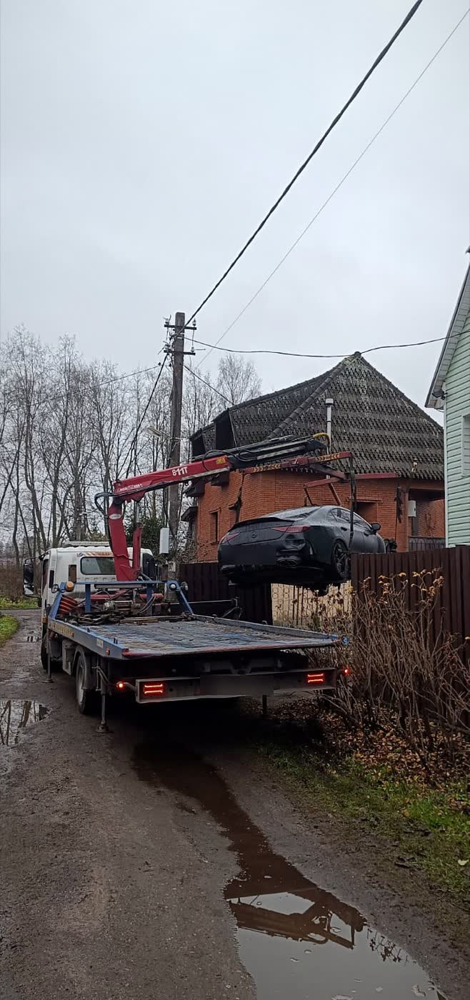

Какие бывают эвакуаторы и какой нужен в вашей ситуации
Коротко: если колёса крутятся, хватит эвакуатора с платформой, от 3 500 ₽ + 80 ₽/км. Колёса заблокированы: платформа с подкатными тележками, от 350 ₽ за тележку. Машина в канаве, на боку или села на ограждение: нужен манипулятор, от 8 000 ₽ + 100 ₽/км. Подбирает технику диспетчер по вашему описанию.
- Работаем 24/7
- Подача по СПб 20–40 мин
- Цена до выезда
Диспетчер ответит круглосуточно и назовёт стоимость до выезда.
Сложный случай? Пришлите фото, оценим стоимость: WhatsApp · Telegram · Max

Эвакуатор перевозит автомобили, которые не могут ехать сами, полностью погрузив их на платформу. Чаще всего причина в поломке или ДТП, и от причины зависит, какой эвакуатор нужен. Ниже разбираю типы техники по порядку: от самого простого к самому универсальному.
Эвакуатор с аппарельной платформой
Самый распространённый тип. Подходит для простых случаев: коробка передач не заблокирована, колёса крутятся, тормозная система исправна. Возможности у него ограничены. Если при заказе описать ситуацию неточно, можно потерять время: приедет эвакуатор, который с задачей не справится.
Эвакуатор с гидравлической сдвижной платформой
Возможностей на порядок больше, в том числе выше грузоподъёмность. С ним используют специальные подкатные тележки под заблокированные колёса, поэтому погрузка проходит быстрее и безопаснее. Лебёдка у него мощнее и справляется с более сложными задачами, но не со всеми.
Тележка стоит от 350 ₽ за штуку. В некоторых случаях, в зависимости от марки автомобиля и года выпуска, коробку передач можно разблокировать на месте, и тогда тележки не понадобятся. Назовите диспетчеру марку и год, он подскажет.
Эвакуатор с манипулятором
Бывает, что машина наехала на препятствие и села подвеской на бетонное ограждение. При обычной погрузке можно повредить подвеску, глушитель и другие детали под днищем. В таких случаях незаменим эвакуатор с манипулятором.
Спектр возможностей у этой техники очень большой, а сдвижная платформа на том же эвакуаторе делает его по-настоящему универсальным. Машина съехала в канаву, лежит на боку или у неё просто заблокирована коробка передач: это лишь малая часть случаев, где нужен манипулятор.
Почему захваты манипулятора не царапают машину
Эвакуатор с манипулятором оснащается специальной траверсой, балансирующим цилиндром, который уравнивает разницу в массе передней и задней части автомобиля, и колёсными захватами. При подъёме захваты соприкасаются только с небольшой частью колёсных дисков и не оставляют повреждений, даже мелких царапин.
Из нашей практики




Как выбрать по ситуации
Сколько стоит каждый вариант
Что важно при звонке
Очень важно описать ситуацию, когда звоните нам. Диспетчер может попросить фото или видео, чтобы оценить ситуацию и прислать самый подходящий эвакуатор. Так вы не переплатите за манипулятор там, где хватит платформы, и не будете ждать вторую машину, если первая не справится.
- Где машинаАдрес, ориентир или километр трассы. Удобнее всего отправить геолокацию.
- Как стоитНа дороге, в канаве, во дворе, в паркинге, на ограждении, на боку.
- Что с нейКрутятся ли колёса, есть ли ключ, какая коробка, марка и год.
- Фото или видеоВ WhatsApp, Telegram или Max: 8 (905) 213-10-33.
Отзывы клиентов
★★★★★ Смотреть все отзывы на Яндексе ›«Работа выполнена на отлично! Машина доставлена в срок, всё прошло без лишних хлопот. Настоящие профессионалы!!»
«Эвакуатор прибыл очень быстро, водитель был профессионален и вежлив. Машину доставили целой и невредимой. Мне очень понравилось.»
«Лучшая служба эвакуации, с которой я когда-либо сталкивался! Быстро реагируют. Эвакуатор приехал вовремя. Рекомендую»
Частые вопросы
Какой эвакуатор вызвать, если колёса не крутятся?
Эвакуатор со сдвижной платформой и подкатными тележками, тележка от 350 ₽. Иногда коробку можно разблокировать на месте: назовите марку и год, диспетчер подскажет.
Повредит ли манипулятор машину?
Нет. Колёсные захваты касаются только небольшой части дисков, а траверса с балансирующим цилиндром держит машину ровно. Повреждений не остаётся, даже царапин.
Когда без манипулятора не обойтись?
Машина в канаве или кювете, на боку, села подвеской на ограждение или к ней нельзя подъехать вплотную.
Можно ли вызвать манипулятор «на всякий случай»?
Можно, но он дороже: от 8 000 ₽ против 3 500 ₽ у платформы. Лучше прислать фото, и диспетчер скажет, хватит ли платформы.
Кто решает, какая техника приедет?
Диспетчер по вашему описанию. Знать названия техники не нужно, достаточно рассказать, что случилось.
Нужен эвакуатор сейчас?
Круглосуточно. Стоимость назовём до выезда.